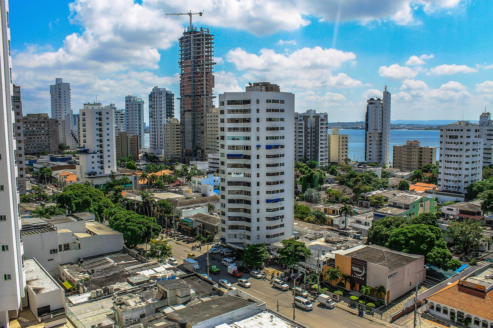
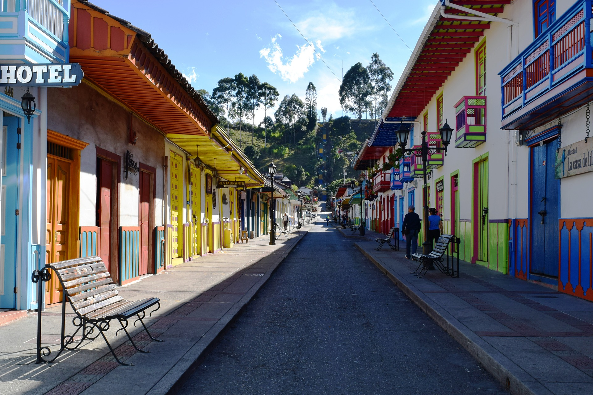
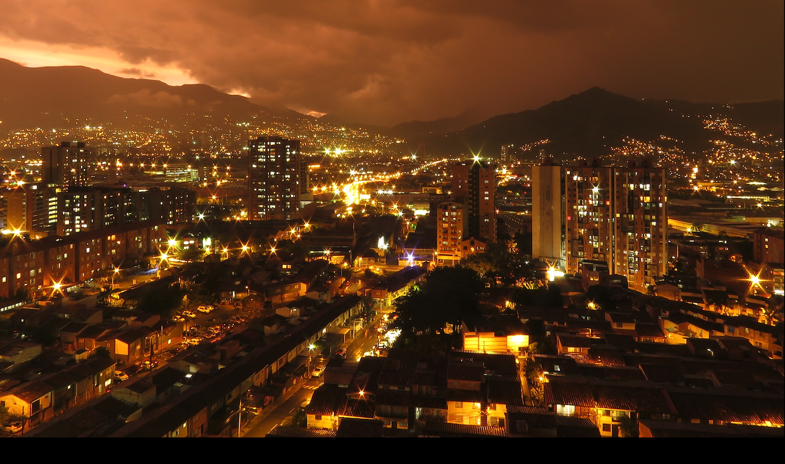

STÄDTE
Cartagena
Die Stadt im Westen Südamerikas zählt zu den schönsten Kolumbiens. Sie liegt direkt an der Karibik und ist vor allem für sein Fort bekannt.
Salento
Einer der bekanntesten Orte, welcher an die Kolonialzeit zurückerinnert. Sie liegt in den höheren Regionen des Landes und ist ein Muss für jeden Kaffeeliebhaber.
Medellin
Der Name der Stadt sagt jedem Fan der Netflix-Serie "Narcos" etwas. Früher war sie geprägt von Drogenkriegen und politischen Auseinandersätzungen, heute hat sich die Lage beruhigt und ist für jeden Touristen einen Besuch wert.